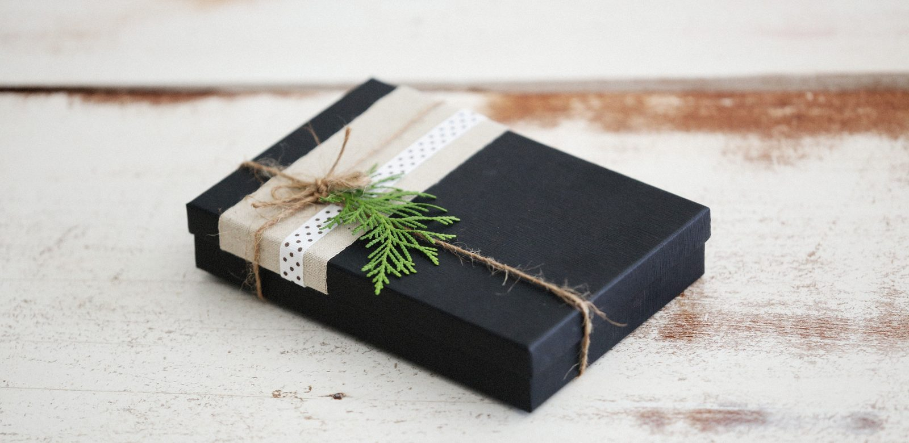

Batman cadeau: 10 ideeën voor kind, man en vrouw
Batman is de held met de breedste fans: kleuters die met een cape door de kamer rennen, kinderen die de Batmobile willen bouwen en volwassenen die al dertig jaar elke film zien. Een Batman cadeau voor elk van hen is een ander cadeau. Hieronder tien ideeën, van een schoencadeautje tot het grote pakje, met bij elk idee voor wie het is en waarom wij het zouden geven.

In het kort
Het korte antwoord: voor een kind is het beste Batman cadeau iets om mee te spelen of in te verkleden, voor een volwassene iets om te lezen, te spelen of neer te zetten. Tot een jaar of acht kies je uit de cape, de grote speelfiguur en de kleine LEGO-sets. Vanaf acht jaar mag het een grotere LEGO-set worden. Voor een man of een vrouw die Batman al lang volgt, werken de strip, de game, het bordspel, de lamp en de mok beter dan speelgoed. De prijs van elk idee staat live in de tabel hieronder en in elk blok, want die verandert.
Waar het verschil in zit
Voor wie het is, kind of volwassene. Bij Batman is dat de eerste vraag, belangrijker dan het budget. Veel volwassen fans kennen Batman van de films en de games, die voor een ouder publiek gemaakt zijn. Een volwassene die Batman een cadeau geeft voor zichzelf, of voor een partner, zoekt meestal iets voor op het bureau, in de kast of op de bank, geen speelgoed.
Spelen, bouwen of verkleden. Voor een kind is dat de tweede vraag. Een speelfiguur gaat mee naar buiten, een LEGO-set is eerst een middag bouwen en daarna spelen, en een cape maakt van het kind zelf Batman. Een kind dat nooit met poppetjes speelt, wordt niet blij van de beste figuur.
Welke Batman het kind of de fan kent. Batman bestaat al sinds 1939 en elke generatie heeft zijn eigen versie, van de tekenfilmserie tot The Batman uit 2022. De Batmobile uit The Batman ziet er anders uit dan de Tumbler uit de films met Christian Bale. Wie de versies op een rij wil zetten, leest wie is Batman. De meeste kinderen maakt het niet uit, maar een volwassen fan heeft vaak een favoriet.
Het moment. In een schoen voor Sinterklaas past iets anders dan onder de kerstboom. Daarom staan de ideeën hieronder in drie groepen: kleine cadeaus, het gewone verjaardagscadeau en het grote pakje. Binnen elke groep staan ze van jong naar oud.
Kleine cadeaus en schoencadeautjes
Batman-cape voor kinderen
Het idee waar een kleuter het hardst mee wegrent. Een cape gaat over gewone kleren heen, dus hij kan zo mee naar buiten, naar school of naar een feestje, en er valt niets aan kapot te maken. Van alle tien ideeën is dit het idee met de meeste beoordelingen bij bol, en ze zijn goed.
- Meeste beoordelingen van deze pagina, en goede
- Gaat over gewone kleren heen
- Klein genoeg voor een schoen of een kerstsok
- Een cape, geen heel pak
- Stof, dus na een paar maanden buitenspelen niet meer als nieuw
LEGO Bruce Wayne en de Batsuit, klein zakje
Het kleinste idee op deze pagina. Een klein LEGO zakje met Bruce Wayne, de man achter het masker, en zijn pak. Plat genoeg voor de kleinste schoen, meteen te bouwen, en de minifiguur gaat daarna gewoon mee in de LEGO-bak. Voor een kind dat al een Batman-set heeft, is dit precies de figuur die er nog niet bij zat.
- Past plat in een schoen
- Goed beoordeeld bij bol
- Bruce Wayne zonder masker zit niet in elke set
- Snel klaar, het is een klein bouwsel
- Kleine onderdelen, dus niet voor kleuters
Batman-mok in een cadeaudoosje
Voor de collega, de vader of de vriendin die al jaren Batman kijkt, en voor wie een klein cadeau zoekt dat wel gebruikt wordt. Hij zit al in een doosje, dus inpakken hoeft bijna niet. Wij zouden hem geven als schoencadeautje voor een volwassene of als extra bij een groter pakje.
- Zit al in een cadeaudoosje
- Wordt elke dag gebruikt, belandt niet in een la
- Een van de kleinste prijzen op deze pagina
- Nog geen beoordelingen bij bol
- Een mok blijft een mok: als enig cadeau is het mager
Het gewone verjaardagscadeau
Grote Batman-figuur in zwart pak
De grote, stevige speelfiguur waar de meeste kinderen aan denken bij een Batman cadeau. Hij is groot genoeg om in een kleine hand goed vast te houden, kan tegen een stootje en heeft armen en benen die bewegen. Het is ook een van de goedkopere ideeën hier, dus hij past bij een verjaardag en bij een schoen voor een groter kind.
- Groot en stevig
- Armen en benen bewegen
- Laag in prijs voor dit formaat
- Pas één beoordeling bij bol, dus de score zegt nog weinig
- Geen lichtjes, geluid of voertuig erbij
LEGO Batmobile uit The Batman
Zonder Batmobile is Batman maar half. Dit is de auto uit de film The Batman, als kleine LEGO-set: in een middag gebouwd, en daarna rijdt hij gewoon over de vloer. Voor een kind dat voor het eerst zelf een LEGO-set bouwt, is dit het formaat waarop dat lukt zonder hulp.
- Goed beoordeeld bij bol
- Zelf te bouwen, daarna gewoon speelgoed
- Klein genoeg voor een verjaardag, groot genoeg om trots op te zijn
- Een ervaren bouwer is er snel doorheen
- Pas een paar beoordelingen
Cluedo, de Batman-uitgave
Het enige idee hier dat je met het hele gezin of een groep vrienden doet. Cluedo kent bijna iedereen al, dus er valt weinig uit te leggen, en in deze uitgave speelt het in de wereld van Batman. Voor een volwassen fan is het een cadeau dat niet op de plank belandt, en voor een gezin met een kind dat Batman leuk vindt een spel waar de ouders ook iets aan hebben.
- Samen te spelen, met twee of meer
- De regels kent bijna iedereen al
- Leuk voor kinderen en volwassenen
- Nog geen beoordelingen bij bol
- Voor kleuters te veel om bij te houden
Lamp met het Batman-logo
Voor wie geen speelgoed zoekt maar iets voor in huis. Een lamp in de vorm van het vleermuislogo, voor op het bureau, naast de televisie of in de gamehoek. Het is het idee dat het vaakst werkt voor een tiener of een volwassen fan die al alles heeft: het staat er elke avond, en het is het bat-signaal, maar dan thuis.
- Officieel gelicentieerd
- Staat elke dag aan, geen kast-cadeau
- Werkt voor tieners en volwassenen
- Pas twee beoordelingen bij bol
- Sfeerlicht, geen leeslamp
Absolute Batman deel 1: The Zoo
Het beste idee voor de volwassen fan die de films kent maar de strips nooit las. Absolute Batman is de nieuwe reeks van DC waarin Batman opnieuw begint, zonder het geld van de familie Wayne, en dit eerste deel bundelt het begin. Een strip is een cadeau dat iemand in één avond uitleest en daarna wil weten hoe het verder gaat.
- Het begin van een nieuwe reeks, dus geen voorkennis nodig
- Goed beoordeeld bij bol
- Iets anders dan de zoveelste mok of figuur
- Engelstalig
- Geschreven voor volwassenen, niet voor kinderen
Het grote pakje
LEGO Batman Tumbler tegen Two-Face en The Joker
Het grote Batman cadeau voor een kind. De Tumbler is de Batmobile uit de films van Christopher Nolan, en in deze doos zitten er twee tegenstanders bij: Two-Face en The Joker. Held en schurken in één doos betekent dat er na het bouwen meteen een verhaal te spelen is. Wij zouden hem geven vanaf een jaar of acht.
- Held en twee schurken in één doos
- Goed beoordeeld bij bol
- Een avond bouwen, daarna speelgoed
- Een van de duurdere ideeën op deze pagina
- Nog maar een handvol beoordelingen
Batman: Arkham Knight voor PlayStation 4
Voor de man of vrouw met een PlayStation die Batman al lang volgt. In Arkham Knight ben je zelf Batman in een open Gotham City, met de Batmobile erbij, en het spel wordt nog altijd genoemd als een van de beste superheldengames. Het is een spel voor de PlayStation 4, en het speelt ook op een PlayStation 5. Van alle ideeën voor volwassenen heeft deze de meeste beoordelingen.
- Meeste beoordelingen van de ideeën voor volwassenen
- Speelt ook op de PlayStation 5
- Uren speelplezier voor een prijs onder de meeste games
- PEGI 18: niet voor kinderen
- Alleen voor PlayStation, niet voor Switch of Xbox
Welk Batman cadeau voor wie
Drie tot vijf jaar. De cape en de grote speelfiguur. Geen LEGO en geen verzamelfiguren: te klein en te breekbaar. Meer ideeën voor deze leeftijd staan in welk superhelden cadeau bij welke leeftijd.
Zes tot negen jaar. De leeftijd van de eerste eigen LEGO-set. De kleine Batmobile is hier de veilige keuze, het LEGO zakje met Bruce Wayne past in de schoen. Zoek je alleen speelgoed, kijk dan ook in het beste Batman-speelgoed per leeftijd en budget.
Tien jaar en ouder. Nu mag het groter: de Tumbler met Two-Face en The Joker als hoofdcadeau, of Cluedo om samen te spelen. Welke spullen Batman zelf gebruikt, staat in de coolste gadgets van Batman, en dat is een leuke gids om bij het cadeau te lezen.
Batman cadeau voor een man. De game voor wie een PlayStation heeft, de strip voor wie leest, de lamp voor de gamehoek of het bureau. Als klein cadeau de mok.
Batman cadeau voor een vrouw. Precies dezelfde ideeën: de strip, de lamp en Cluedo zijn geen mannencadeaus. Kies op wat ze leuk vindt aan Batman, de films, de strips of de games, en niet op wie het krijgt.
Wat wij niet zouden kopen
Speelgoed van een film die het kind nog niet mag zien. Veel Batman-films zijn voor tieners en volwassenen gemaakt. Ook Clayface, de film over de Batman-schurk die nu in de bioscoop draait, heeft Kijkwijzer 16. Een kind van zes dat hoort dat zijn speelgoed uit een film komt, wil die film ook zien. Voor jonge kinderen werkt de held zelf beter dan de schurk uit de nieuwste film.
Een verzamelfiguur voor een kind dat wil spelen. Figuren voor verzamelaars hebben losse handjes en wapens en staan het mooist in de kast. Bij een kind van vijf zijn die binnen een week kwijt. Voor spelen is de grote, stevige figuur beter.
Een dure LEGO-set als eerste set. De grote Batman-sets voor verzamelaars, zoals Arkham Asylum of de Batwing uit 1989, zijn prachtig maar duur en voor volwassen bouwers bedoeld. Voor een kind is de Tumbler het hoogste waar wij heen zouden gaan, en voor een eerste set de kleine Batmobile.
Veelgestelde vragen
Wat zijn de beste Batman cadeaus? Voor een kind de cape, de grote speelfiguur en de LEGO Batmobile; voor een volwassene de strip Absolute Batman, de game Arkham Knight, de lamp met het Batman-logo of Cluedo in Batman-uitgave. Welke het beste is, hangt af van of iemand wil spelen, lezen of iets wil neerzetten.
Wat is een goed Batman cadeau voor een man? Een game als Batman: Arkham Knight voor wie een PlayStation heeft, een strip voor wie leest, of een lamp met het Batman-logo voor het bureau. Als klein cadeau een mok.
Wat is een goed Batman cadeau voor een vrouw? Dezelfde ideeën als voor een man: de strip, de lamp, het bordspel of de game. Kies op wat ze leuk vindt aan Batman, niet op wie het krijgt.
Wat is een leuk Batman cadeau voor een kind? Tot vijf jaar een cape of een grote speelfiguur, van zes tot negen een kleine LEGO-set zoals de Batmobile uit The Batman, en vanaf een jaar of acht de LEGO Tumbler met Two-Face en The Joker.
Wat is een klein Batman cadeautje voor in de schoen? De Batman-cape, het kleine LEGO zakje met Bruce Wayne, of voor een volwassene een Batman-mok. Meer ideeën staan in superhelden schoencadeautjes.
Hoe wij deze tien gekozen hebben
We hebben gezocht naar ideeën die over leeftijd, soort en budget gespreid zijn, zodat er voor een kleuter, een kind van tien en een volwassen fan iets bij zit, van een schoencadeautje tot het grote pakje. Elk product is op 27 oktober 2026 bij bol nagekeken op prijs en levertijd. Kleding hebben we bewust weggelaten: een shirt met het logo is een prima extra, maar zelden het cadeau waar iemand naar uitkijkt, en de maat is een gok.
Over sterren: bij speelgoed en cadeaus zijn de aantallen beoordelingen vaak klein, en nieuwe producten hebben er nog geen. Het aantal staat in elk blok, zodat je zelf kunt zien hoeveel een score zegt. Een idee zonder beoordelingen staat er alleen in als wij kunnen uitleggen waarom.
Via de knoppen naar bol verdienen wij een kleine commissie. Dat verandert niets aan wat hier staat: valt een product bij bol weg, dan verdwijnt het blok inclusief onze tekst, en de prijs die je ziet is altijd de actuele van bol.
💡 Handig om te weten
Twijfel je tussen speelgoed en iets voor volwassenen, bijvoorbeeld voor een tiener? Kies dan wat iemand al doet: wie gamet krijgt de game, wie leest de strip, wie nog met LEGO bouwt de Tumbler.
Zoek je een cadeau voor een bepaald moment? Kijk dan ook in onze gidsen voor Sinterklaas en Kerst, in Marvel cadeau voor de fan van de Avengers, of lees meer over Batman.